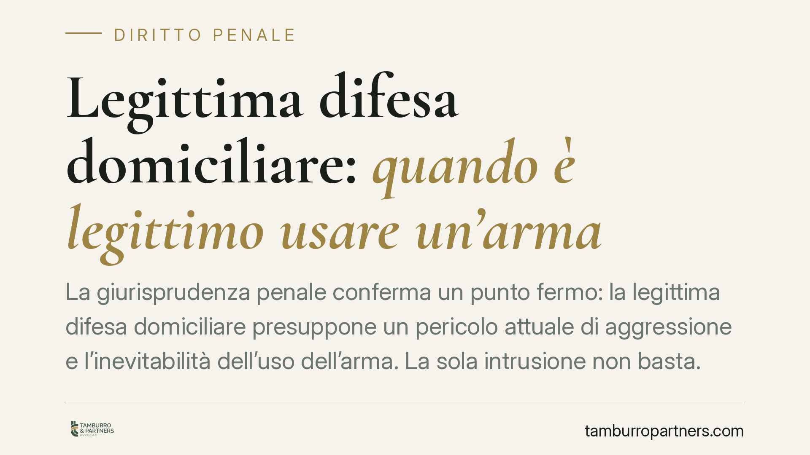

Legittima difesa domiciliare: quando è legittimo usare un'arma
La giurisprudenza penale conferma un punto fermo: la legittima difesa domiciliare presuppone un pericolo attuale di aggressione e l'inevitabilità dell'uso dell'arma. La sola intrusione non basta. Le riforme del 2006 e del 2019 hanno toccato proporzionalità ed eccesso colposo, ma non hanno cancellato questi presupposti strutturali, che restano oggetto di accertamento in concreto.

Il fatto e perché conta
La questione torna con regolarità davanti alla Corte di cassazione: fino a che punto chi subisce un'intrusione nella propria abitazione può reagire, anche con un'arma, senza incorrere in responsabilità penale.
L'indirizzo interpretativo oggi stabile è netto. Non è la presenza dell'estraneo in casa, di per sé, a rendere legittima la reazione armata. Occorre un pericolo attuale per l'incolumità propria o altrui e l'assenza di alternative concrete alla difesa. Due condizioni che le riforme degli ultimi vent'anni non hanno eliminato.
Inquadramento normativo
La cornice è l'art. 52 del codice penale. La disciplina ordinaria della legittima difesa esige un pericolo attuale di un'offesa ingiusta, la necessità della reazione e la proporzione tra difesa e offesa.
La Legge 13 febbraio 2006, n. 59 ha introdotto nei commi aggiunti all'art. 52 c.p. una presunzione di proporzionalità a favore di chi si difende nel domicilio (o nei luoghi a esso assimilati, come esercizi commerciali), quando usa un'arma legittimamente detenuta per difendere la propria o altrui incolumità, oppure i beni, in presenza di pericolo di aggressione e mancata desistenza.
La Legge 26 aprile 2019, n. 36 è intervenuta su due fronti. Da un lato ha rafforzato, con l'avverbio «sempre», la presunzione di proporzionalità nell'ambito dell'art. 52 c.p. Dall'altro — ed è il punto da leggere con attenzione — ha modificato l'art. 55 c.p., in materia di eccesso colposo: non è punibile chi, nelle situazioni di difesa domiciliare, ha ecceduto i limiti trovandosi in stato di «grave turbamento» derivante dalla situazione di pericolo.
Cosa cambia davvero
Qui sta il fraintendimento più diffuso. Nessuna delle due riforme ha trasformato l'abitazione in uno spazio in cui ogni reazione è automaticamente giustificata.
Il pericolo deve essere attuale. Un intruso che fugge con la refurtiva, voltando le spalle, non integra un'aggressione in atto: sparargli colloca la condotta fuori dal perimetro della difesa legittima. Diverso è il caso di chi avanza armato verso le persone presenti: lì il pericolo è concreto e presente.
La reazione deve essere inevitabile. Se esiste una via di fuga sicura o un'alternativa praticabile, l'uso dell'arma difficilmente supera il vaglio del giudice.
Il grave turbamento dell'art. 55 c.p. non opera come esimente automatica. È una condizione psicologica che va accertata in concreto, provando che lo stato emotivo era effettivo e causalmente legato al pericolo. Non basta invocarlo: va dimostrato.
Cosa osservare in concreto
Per chi si trova a fronteggiare un'intrusione, alcuni elementi assumono rilievo decisivo nella successiva ricostruzione giudiziaria:
- Verificare l'attualità del pericolo. La difesa è legittima finché l'aggressione è in corso, non quando l'intruso sta già allontanandosi.
- Privilegiare, se possibile, alternative alla reazione armata. La presenza di una via d'uscita o di una chiamata tempestiva alle forze dell'ordine incide sul giudizio di inevitabilità.
- Usare solo armi legittimamente detenute. La presunzione di proporzionalità opera entro questo presupposto; la detenzione irregolare apre un fronte autonomo di responsabilità.
- Conservare ogni traccia utile. Dispositivi di videosorveglianza, messaggi, orari delle chiamate di soccorso aiutano a documentare dinamica e tempistica degli eventi.
- Non alterare lo stato dei luoghi. La scena dei fatti è un elemento probatorio: modificarla può compromettere la ricostruzione a proprio favore.
In vicende di questo tipo la ricostruzione tempestiva e documentata dei fatti assume rilievo decisivo. L'esito di un procedimento per legittima difesa dipende quasi sempre dalla precisione con cui si ricostruiscono i secondi che hanno preceduto la reazione.
In sintesi
Le riforme hanno spostato alcuni equilibri — ampliando la presunzione di proporzionalità e introducendo una causa di non punibilità per l'eccesso colposo legato al grave turbamento — ma non hanno smantellato l'impianto dell'art. 52 c.p. Pericolo attuale e inevitabilità restano i due pilastri. La loro valutazione è, e rimane, un accertamento caso per caso.
Contributo informativo a cura di Tamburro & Partners Avvocati - Avv. Giuseppe Tamburro. Non costituisce parere legale.
Ogni condominio ha una storia a sé.
Se gestisci un'amministrazione e vuoi un confronto su una specifica questione condominiale, scrivi allo studio. Ti rispondiamo entro un giorno lavorativo.